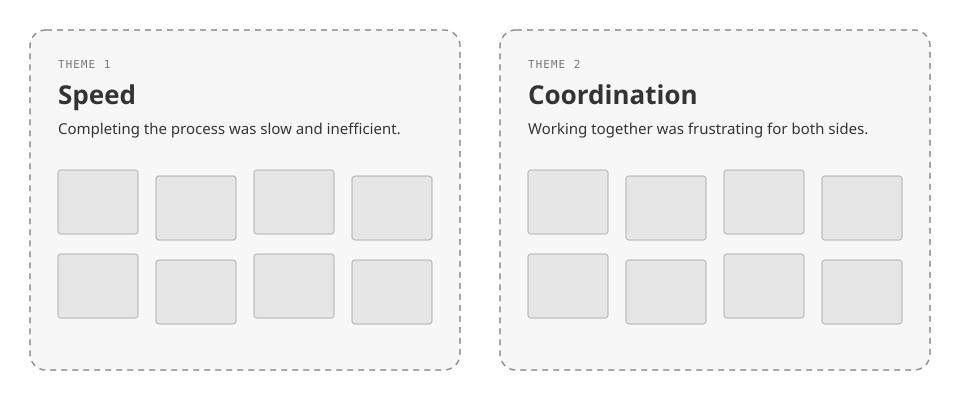
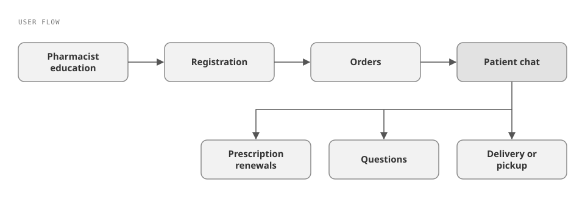
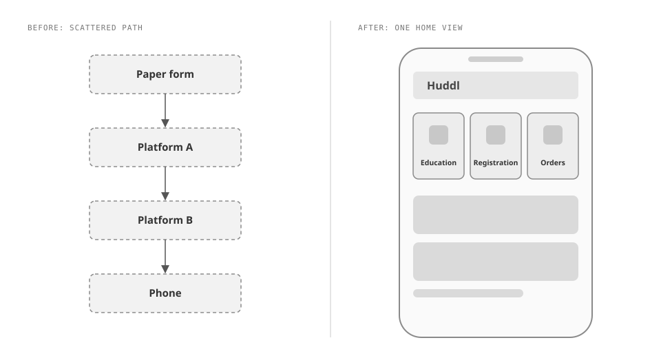
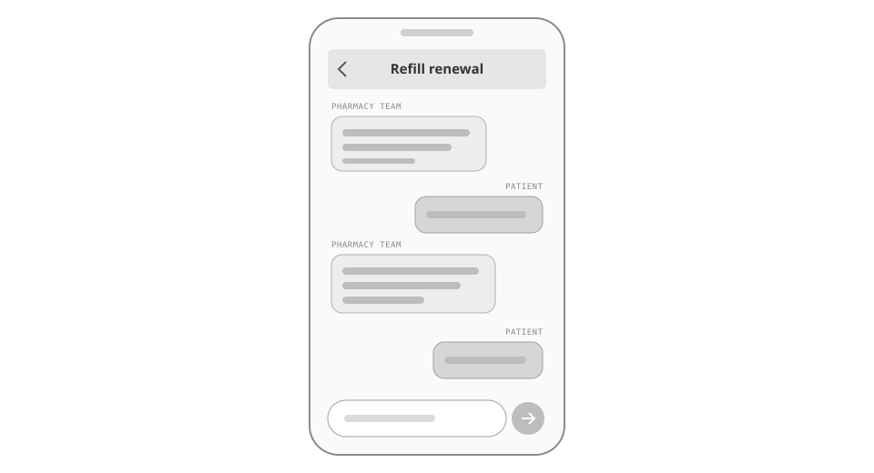
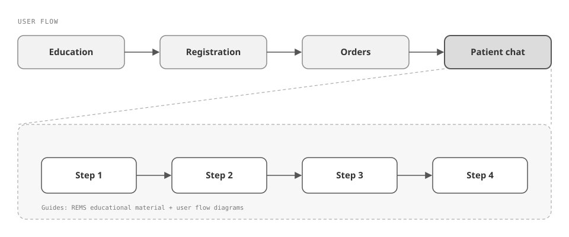

Before Huddl, getting pharmacists cleared to dispense REMS drugs and keeping patients informed ran across manual paperwork, separate online platforms, and phone calls. In 8 weeks as lead designer, I took Huddl from discovery interviews to a validated prototype on TestFlight: one app for education, registration, and orders, with in-app chat in place of the phone. Measured against existing benchmarks and again in usability testing with live patients, Huddl cut the administrative hours spent managing REMS prescriptions by up to 80%, and the prototype helped Huddl secure funding with the University of California San Francisco.

Huddl streamlines how pharmacists get educated and registered to dispense REMS drugs. REMS (Risk Evaluation and Mitigation Strategy) drugs carry special handling protocols, and pharmacists have to be educated and registered before they're allowed to distribute them.
Before Huddl, that work ran across lots of independent systems. Some steps were manual paperwork, some meant moving information by hand from one online platform to another, and customer orders were managed over the phone. Nothing tied the steps together.
Talking to patients was phone-only too. Pharmacists, physicians, and care teams needed a direct line to patients for prescription renewals, questions, and confirming delivery or pickup, and every one of those conversations meant a call. Calls made it hard to start a conversation at all, and once a call was underway, human error crept into what got said and heard.
The client was Huddl itself, a startup. It needed a functional prototype it could validate with users and subject matter experts (SMEs), and then use to raise more funding. The project ran 8 weeks.
I started with discovery interviews with three groups: patients, pharmacists, and admin staff. Across those interviews and the prototype testing that came later, I worked with roughly 20 people in all, spanning patients, pharmacists, admin staff, and cardiologists.
I sorted what I heard into an affinity diagram, grouping individual insights into larger themes. Two themes stood out:
- Speed: completing the process was slow and inefficient.
- Coordination: working together was frustrating for both sides.
I turned each theme into a problem statement:
- How might we let pharmacists complete REMS education, registration, and order management in one place, so the process stops being slow and inefficient?
- How might we make it easy for pharmacy teams and patients to start a conversation and get it right, so coordination stops frustrating both sides?
To kick off ideation, I ran a MoSCoW map (sorting features into Must have, Should have, Could have, and Won't have) to define what a minimum viable product (MVP) needed to do to solve both statements.
Ideation started with user flow diagrams. From those I mocked up a high-level user flow in Figma and prototyped the whole experience there. Claude Code came in only at the end, to define how the chat would behave: I built the scripts the AI must pass through and started the conversation design in Claude Code, using the REMS educational material and the user flow diagrams as guides to outline each conversation.
I validated the prototype with pharmacists, cardiologists, and end users, including usability testing with live patients, then led the 2 developers through launch on TestFlight, Apple's beta-testing platform.


One app instead of a chain of independent systems
I centralized REMS education, registration, and order management into Huddl, instead of leaving the process spread across paperwork, separate online platforms, and phone orders.
Research named the cost of that spread directly: speed to complete was slow and inefficient. Every step that lived in a different place was another manual handoff.

In-app chat instead of phone calls
I moved patient communication (renewals, questions, delivery and pickup confirmations) into chat inside the app, instead of keeping it on the phone.
Phone calls created friction just to get a conversation started, and once a call was underway, they left room for human error in what was communicated. Chat took aim at both: there's no call to set up, and each conversation follows scripts the AI must pass through instead of depending on how a call happens to go.

Prototype in Figma first; bring in Claude Code only for conversation design
I built and prototyped the whole flow in Figma first, and used Claude Code only at the end, to script how the AI chat would behave.
Considered instead: starting the build in code earlier. Claude Code wasn't nearly as mature at that point, and we were still figuring out how to fit it into our existing process, so Figma carried the design and prototyping.
What it allowed: the conversation scripts were written against a settled flow, with the user flow diagrams and the REMS educational material as their guides.

"Huddl cut the administrative hours spent managing REMS prescriptions by up to 80%."
We measured that against existing benchmarks, then again during usability testing with live patients. Validation testing with pharmacists, cardiologists, and end users confirmed the concept addressed real pain points. With the prototype in hand, Huddl secured funding with the University of California San Francisco and kept using the prototype to pitch private investors.